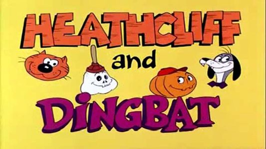
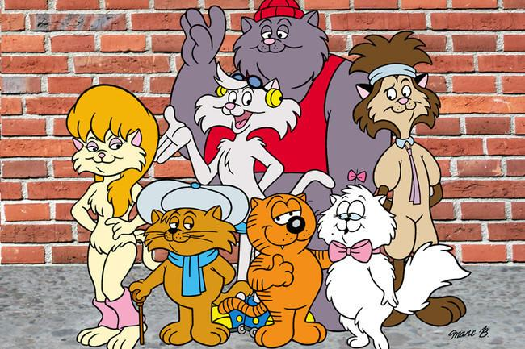
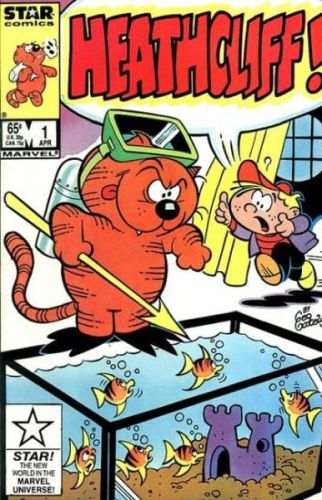
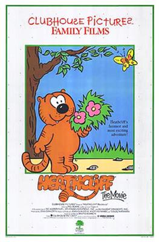

Heathcliff is an American comic strip created by George Gately in 1973, featuring the title character, a wisecracking cat. Now written and drawn by Gately's nephew, Peter Gallagher, it is distributed to over 1,000 newspapers by Creators Syndicate, who took over the comic from McNaught Syndicate in 1988.
The strip is usually presented in single-panel gag frames on weekdays. On Sundays, though, the strip is expanded to multiple panels and titled Sunday with Heathcliff. A regular feature in the Sunday strips is Kitty Korner, where unusual cats in the real world are described.
Heathcliff (1980 and 1984 animated TV series)
Although Heathcliff did not speak in the comic strip, both animated versions of him were voiced by Mel Blanc. Heathcliff was one of the last original characters Blanc would voice before his death in 1989.

The first Heathcliff was produced by Ruby-Spears Productions and debuted in 1980. The first season featured segments with Dingbat and the Creeps (Dingbat is the vampire dog accompanied by Spare Rib the skeleton and Nobody the jack-o-lantern who were both voiced by Don Messick), which were created by Ruby-Spears for the show, and the second season featured fellow comic strip character Marmaduke. This version is sometimes seen on Boomerang.

In 1984, the second Heathcliff debuted, which was produced by DiC Entertainment. This series featured segments with The Catillac Cats, which is why this version is sometimes referred to as Heathcliff and The Catillac Cats.
Both Heathcliff cartoons together ran from 1980-1988.

The Marvel Comic book version of the popular comic strip cat, Heathcliff successfully ran for 56 issues between 1985 and 1991. Scripts were by Hal Smith and Illustrations by Warren Kremer & Jacqueline Roettcher.
Issue #1, Heathcliff poses as a rich family's cat but the rich life isn't all that it's made out to be in "The Cat-Napping Caper." Then in "Goes Hollywood," Heathcliff gets jealous of Marvin Cat, the star of the Liver Lumps commercials.

In 1986, Heathcliff: The Movie debuted in theaters; it was released on VHS by Paramount Home Video in 1988. In 2005, Shout! Factory released a Volume 1 DVD for the show, featuring the first 24 episodes of the series.